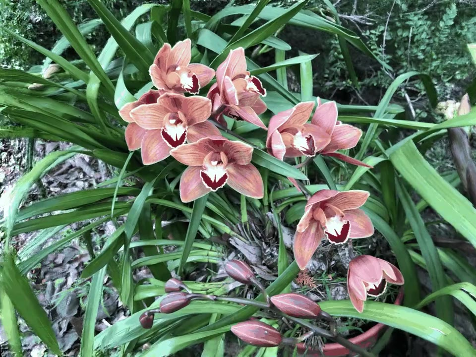
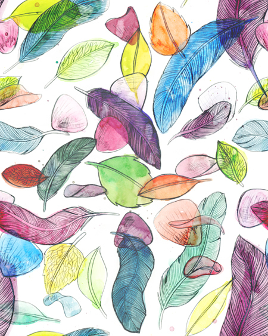

3D GAUSSIAN SPLATTING / VISUAL RESULTS
A scene.
Many expressions.
3D scene stylization
with SemGeoSplat.
Explore new perspectives on familiar scenes through a collection of artistic styles.
View selected results ↓ SEMGEO RESULT
Orchids / Style 3


SELECTED WORK
Selected results.
12 selected results · 10 scenes · 11 styles
A curated collection of expressive scenes and distinctive styles. Select any result to explore it in motion.
THE PROJECT
SemGeoSplat
3D scene stylization, in motion.
Twelve selected SemGeo results, each paired with its original scene and style reference. Select any result to explore the animation in detail.
The source code is being prepared for release. Follow the repository for code and project updates.
View project on GitHub ↗